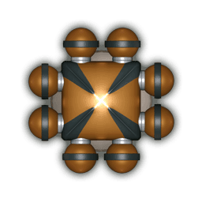
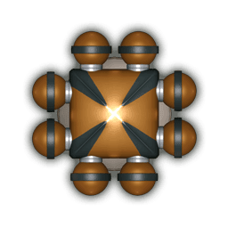

Moduły podtrzymywania życia
 Brązowe i fioletowe części to systemy podtrzymywania życia przeznaczone dla kosmitów. System podtrzymywania życia działa tylko wtedy, kiedy sąsiaduje z kabiną. Dzięki temu w takiej kabinie będzie mógł zamieszkać kosmita koloru danego modułu. Wyjątek: kosmita nie może zamieszkać w początkowej kabinie pilotów. Ludzcy kosmonauci, czyli ludzie w szarych skafandrach, nie potrzebują żadnych dodatkowych modułów podtrzymywania życia i mogą zamieszkać w każdej kabinie.
Brązowe i fioletowe części to systemy podtrzymywania życia przeznaczone dla kosmitów. System podtrzymywania życia działa tylko wtedy, kiedy sąsiaduje z kabiną. Dzięki temu w takiej kabinie będzie mógł zamieszkać kosmita koloru danego modułu. Wyjątek: kosmita nie może zamieszkać w początkowej kabinie pilotów. Ludzcy kosmonauci, czyli ludzie w szarych skafandrach, nie potrzebują żadnych dodatkowych modułów podtrzymywania życia i mogą zamieszkać w każdej kabinie.
Gracze decydują przed startem o tym, czy chcą wziąć na pokład kosmitów.


Zdolności kosmitów
Kosmici należą do załogi statku i w związku z tym bierze się ich pod uwagę podczas rozpatrywania kart takich jak strefa walk czy opuszczona stacja kosmiczna. Możesz też wysłać kosmitów na porzucony statek lub oddać ich handlarzom niewolników. Posiadanie kosmity na pokładzie ma jedną wadę: jeden kosmita zajmuje całą kabinę, w której mogłoby zamieszkać 2 kosmonautów. Kosmici mają też jednak pewne zalety:

Fioletowi kosmici należą do rasy wojowników. Jeśli masz na pokładzie fioletowego kosmitę, otrzymujesz premię +2 do siły ognia. Jeśli Twoja siła ognia wynosi 0 (przed otrzymaniem premii zapewnianej przez kosmitę), nie otrzymasz premii, ponieważ kosmici nie będą walczyć gołymi mackami.

Brązowi kosmici są z kolei dobrymi mechanikami. Jeśli masz na pokładzie brązowego kosmitę, otrzymujesz premię +2 do mocy silników. Jeśli Twoja moc silników wynosi 0 (przed otrzymaniem premii zapewnianej przez kosmitę), nie otrzymasz premii, ponieważ kosmici nie wyjdą przecież w próżnię i nie popchną statku.
Trafienia w systemy podtrzymywania życia
Jeśli stracisz moduł podtrzymywania życia, musisz odrzucić kosmitę żyjącego w kabinie, do której system ten był podłączony (kosmita opuszcza statek w kapsule ratunkowej).